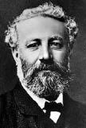

(1828 – 1905)

Daha "bilimkurgu" kavramı bilinmezken yazdığı romanlarda sular altında gezen gemilerden, göklerde uçan uçaklardan, gelecek zamanda yaşanan olaylardan söz eden Jules Verne yazdıklarıyla dünya edebiyatında çok ayrı bir yere sahip. Bugün bildiğimiz anlamda popüler romanın da kurucularından olan "bilimkurgunun babası" yazdığı elli üç romanın her birinin yüz yıl sonra bile basılıp satılabiliyor olmasını müthiş yazarlık vizyonuna borçludur.
Fransız ve dünya edebiyatının en yaratıcı romancılarından biri olan Jules Verne (okunuşu: Jül Vern), 8 Şubat 1828 tarihinde Fransa'nın Nantes kentinde doğdu. Annesi Sophie Henriette Alotte de la Fuye, babası avukat Pierre Verne'di. Çocukluğu bir liman kenti olan Nantes'da geçen küçük Jules, gelip giden gemileri gördükçe daha çocukluğunda uzak denizlere yolculuk hayalleri kurmaya başlamıştı. Okul yıllarında şiir ve öykü yazmaya başlayan Verne babasının isteği üzerine hukuk fakültesine gidip 1850'de mezun olsa da avukatlıktan çok tiyatroyla ilgileniyordu. Arkadaşı müzisyen Jean Louis Aristide Hignard ile birlikte tiyatro oyunları, operetler üzerinde çalışıyorlardı. Bu dönemde yazdığı Balonla Yolculuk (1851) adlı öykü, ileride yayımlayacağı ilk romanı Balonla Beş Hafta (1863) için bir eskiz niteliğindeydi.
Babası yazarlığa zaman ayırdığını öğrenip de harçlığını kesince Verne, para kazanmak için borsa simsarlığı yapmaya başladı. Bu işten nefret ediyor, ama iyi-kötü para kazanabiliyordu. Bu yıllarda Alexandre Dumas ve Victor Hugo ile tanışan Verne onlardan yazarlık hakkında öneriler aldı.
1857 yılında iki çocuklu bir dul olan Honorine de Vian Morel'le evlenen Verne'in 1861'de Michel Jean adında bir oğlu oldu. Jules Verne ve eşi ABD, Britanya gibi ülkelere yolculuklar yaparlarken Verne bir yandan yazıyor, ama yayınevleri tarafından sürekli reddediliyordu. Yazmaya ısrarla devam eden Verne'in editör ve yayıncı adaşı Pierre Jules Hetzel'le tanışması, yaşamında bir dönüm noktası oldu. 1863'te yayımladıkları Balonla Beş Hafta adlı roman kısa sürede büyük ün kazandı. Bu kitap sonradan yayımlanacak elli üç romanla birlikte oluşacak olan Olağanüstü Maceralar adlı serinin ilk kitabı oldu. İlk romanların tamamı Hetzel'in Magazine d'Éducation et Récréation dergisinde tefrika edilen Verne bu ilk romanının ardından birbiri ardına romanlar yayımlamaya başladı. Her romanı büyük ilgi gördü.
Kitap yazmadığı zamanlarda ailesini Saint-Michel adlı teknesine doldurup denizlerde dolaşmayı seven Jules Verne, bu gezilerinde bir yandan da romanları için malzeme topluyordu. Yazar, birçok icadı önceden tahmin ettiği için "bilim falcısı" lakabı ile anılır. Kitaplarında denizaltı, uzay yolculuğu, oksijen tüpü gibi kendi zamanında olmayan birçok aleti ve olayı öngörmüştü.
1886 yılında zihinsel engelli yeğeni Gaston tarafından silahla vurulan Verne, hayatının geri kalanında topallayarak yürümek zorunda kaldı. 1888'de Amiens Belediye Meclisi'ne üye seçilen yazar sonraki on beş yıl boyunca bu görevi başarıyla yürüttü.
Zamanla şeker hastalığının etkileri artan Jules Verne, 24 Mart 1905'te Amiens'te öldü ve La Madeline Mezarlığı'nda toprağa verildi.
Oğlu Michael Verne, babasının ölümünden sonra onun romanlarının basılma işini üstlendi. Yirminci Yüzyıl'da Paris[5] (1994), Dünyanın Öbür Ucundaki Fener (1905), Altın Yanardağı (1906) ve Meteor Avı (1908) Michael'in kontrolünde yayımlandı. Bu romanlardan Altın Yanardağı ve Wilhelm Storitz'in Esrarı (İthaki Yayınları, 2002), Fransa'da 1995 ve 1996 yıllarında basıldı. Jules Verne UNESCO'nun Index Translationum'una göre eserleri dünyada en çok dile çevrilen üçüncü yazardır. Yazarın birçok romanından, çok sayıda sinema filmi ve televizyon dizisi çekilmiştir.
Seçme Romanları: Balonla Beş Hafta (1863 – İthaki Yayınları, 2011), Dünyanın Merkezine Yolculuk (1864 – Taksim & Taksim, 2005), Denizler Altında Yirmi Bin Fersah (1869 – Gün Yayıncılık, 2005), Seksen Günde Dünya Turu (1873 – Engin Yayıncılık, 1993), Esrarlı Ada (1875 – İthaki Yayınları, 2005), İnatçı Keraban (1883 – İthaki Yayınları, 2002), İki Yıl Okul Tatili (1885 – İthaki Yayınları, 2008)